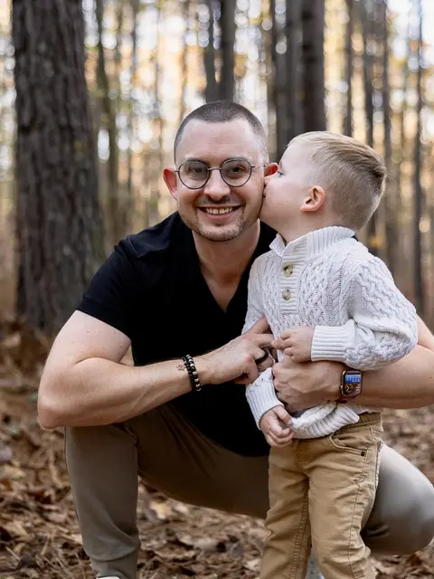

The Grove
Personal AI operating system. 23 specialized agents, 32 slash commands, full SDLC pipeline. CouchDB for storage, pgvector for embeddings, n8n for orchestration. It tends to my life even when I'd rather not.
thegrove.pro →I spent 8 years at Microsoft selling AI.
Then I went home and started building it.
I create trust through truth.
Senior Director at iLink · Former Microsoft FSI · Built The Grove (23 AI agents) · Moth StorySLAM winner · Atlanta, GA
Personal AI operating system. 23 specialized agents, 32 slash commands, full SDLC pipeline. CouchDB for storage, pgvector for embeddings, n8n for orchestration. It tends to my life even when I'd rather not.
thegrove.pro →AI-powered real estate SaaS. CTO and co-founder. Predictive analytics, deal scoring, and portfolio intelligence for real estate investors. Same pattern as Grove: intelligent push, not passive pull.
Private repoDocker with Portainer, NGINX Proxy Manager, Authentik SSO, CouchDB, pgvector, NAS. Everything self-hosted, self-managed, self-debugged at 11pm when something breaks. Every breakage teaches me something a conference talk never could.
All production. All mine. Built nights and weekends in 2026.
"It's Time" is the story of my dad Jon dying of cancer - and my entire family driving six hours on zero notice to fill his house for one last Thanksgiving. We had ham instead of turkey. It was perfect.
I spent 8 years at Microsoft in financial services. Five as a Solutions Engineer, three in sales. The whole time, the thing I was actually best at wasn't selling - it was solving problems with technology and building real relationships along the way. People trusted me because they knew I gave a damn. I created safety for people to say what they actually felt. That's not the best recipe for elite sales numbers, but it's the reason people wanted to work with me and still do.
I'm a builder and a storyteller, and those two things aren't as different as they sound. I've done 12+ keynotes - Nelnet's Director Summit, Microsoft GenAI Tours, Coca-Cola, Ally Financial, CDAO Summit, Power BI World Tour - and I speak at UGA every semester. I've competed in four Moth StorySLAMs and a GrandSLAM, scoring 9.0/10. Whether it's a stage, a boardroom, or a Zoom call, the skill is the same: tell the truth, make it land, and give people something real to hold onto.
In 2025 I joined iLink as Senior Director, building a $4M FSI practice from the ground up. But something else started happening at home. I started building AI systems - not prototypes, not demos, but real production systems with databases, agents, pipelines, and workflows that affect my actual life every day. I built The Grove, a personal life OS with 23 AI agents and 32 skills. I co-founded TendWise as CTO. I run a full homelab because when you want to understand how something works, you have to run it yourself.
At some point I looked up and realized: this is what I am. I'm a builder who opens doors through authenticity and trust. I just took the long way to figure that out.
I'm a dad, I'm in recovery, and I tell stories when I'm brave enough. My winning Moth story was about my dad. I'm not trying to be something I'm not anymore.

Four Moth StorySLAMs, a GrandSLAM (9.0/10), 12+ keynotes from Nelnet to Microsoft to Coca-Cola, and a classroom at UGA every semester. Storytelling isn't a hobby - it's how I lead, how I sell, how I connect. Every system I build, every hard conversation I have starts the same way: what's the real story here?
I create safety for people to say what they actually feel. I create trust through truth. I still talk to people I worked with at Microsoft in 2017. I build AI for a living, but technology doesn't replace human connection - it makes space for it. The Grove exists so I have more bandwidth for the people I care about, not less.
That took a long time to learn. My winning Moth story was about losing my dad - not about having it all figured out. Recovery taught me that strength isn't self-sufficiency. It's knowing when you're out of your depth and saying so. I apply that everywhere - parenting, building companies, leading teams.
Not demos. Not pitch decks. Not proofs of concept that live in a slide. Real systems, in production, doing real work. If it doesn't run at 11pm on a Tuesday when something breaks, it's not built yet.
Bruce is five. He's the reason I got serious about all of this. Being present for him means being honest about everything else.
From agent architecture to workflow orchestration to production deployment. Multi-agent systems, model routing, behavioral guardrails. I've shipped it.
The Grove: 23 agents, 80+ workflows, production since January 2026I translate complex AI and data systems into business narratives that land. Board decks, conference talks, proposals, workshops.
Keynotes at Nelnet, Microsoft, Coca-Cola, Ally Financial, CDAO Summit. 4 Moth StorySLAMs (9.0/10 GrandSLAM). UGA every semester.Go-to-market strategy, Microsoft partnership mechanics, pipeline architecture for financial services AI. I know what buyers fear because I was their buyer for 8 years.
Building iLink's $4M FSI practice from zeroBuilding composable multi-agent AI systems. Persistent memory, behavioral guardrails, domain routing, structured SDLC. The pattern is replicable.
The Grove and AgentOS are open on GitHubIf you're building something with AI and need someone who has actually shipped it - I'm interested.
I read my email. I write back.